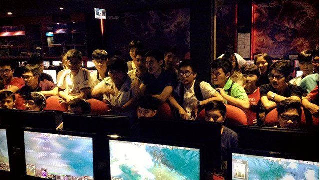
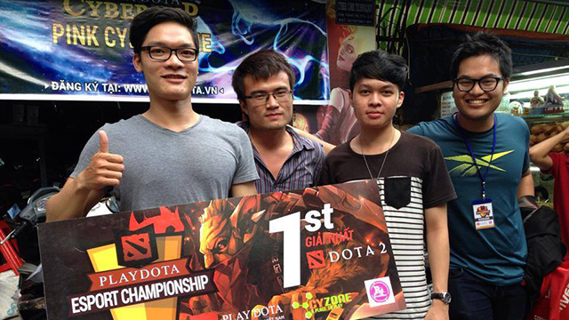
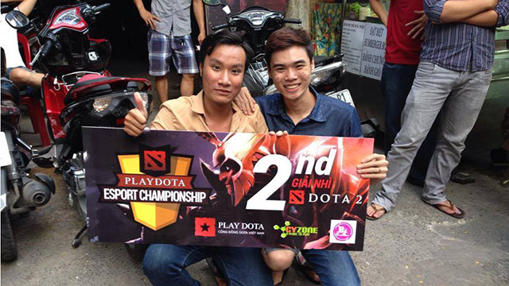

Công bố Playdota Cyber Cup 30/11 tại Thành phố HCM

Cộng đồng Dota 2 Hồ Chí Minh đang đứng trước cơ hội có Triple kill tại giải đấu Playdota Cyber Cup ngày 30/11 tới đây.
Trải qua 2 ngày chủ nhật đậm chất nhiệt huyết ở đầu tháng và giữa tháng, cuối tháng 11 đẹp trời này game thủ Hồ Chí Minh tiếp tục có cơ hội được thử thách bản thân ở một giải đấu nữa được tổ chức tại Cao Tốc Gaming.
Thông tin giải đấu
- Thời gian: Chủ nhật ngày 30/11/2014
- Địa điểm: Cao Tốc 744 Quang Trung , Q.Gò Vấp , Tp HCM
- Giải thưởng: Giải nhât - 2.000.000 VNĐ, Giải nhì - 1.000.000 VNĐ
ĐĂNG KÝ TẠI ĐÂY
Để đăng ký tham dự, các đội trưởng xin vui lòng cung cấp đầy đủ và chính xác các thông tin cho BTC theo mẫu trên. Sau khi hoàn thành thủ tục đăng ký online, các đội phải cử đại diện đến xác nhận với BTC tại địa điểm thi đấu vào Thứ 7 trước ngày thi đấu và nộp lệ phí tham dự. Chỉ có các đội đến xác nhận sớm nhất và có đầy đủ thông tin đăng ký online mới có quyền tham dự giải đấu. BTC cũng sẽ giới hạn số lượng tham dự tùy vào từng khu vực để đảm bảo format giải đấu và thời gian hợp lý.
Notice: Ưu đãi từ địa điểm tổ chức - Các team sinh viên, học sinh được giảm 50% lệ phí thi đấu. Đâc biệt khi xác nhận các team sẽ được tặng 2 giờ chơi cho mỗi tài khoản của 5 team viên và 5 phần nước cho mỗi team vào ngày thi đấu.
- Thông tin chi tiết liên hệ: 01289499492 (Pass: bạn anh Bon)
Chủ nhật vừa qua, cộng đồng Dota 2 Hà Nội và Tp.HCM đã trải qua ngày thi đấu Playdota Cyber Cup 16/11 cực kỳ bùng nổ. Với thời tiết đẹp như tranh vẽ, giải đấu đã lôi kéo được rất nhiều người hâm mộ đến góp mặt chung vui cùng các game thủ tham gia thi đấu.


Tại thành phố mang tên Bác, giải Nhất đã thuộc về Virgin Boys, giải nhì thuộc về Rếch Gaming cùng với Giải 3: Five-star. Không khí khá là nhiệt có vì có nhiều trận đấu hay, hấp dẫn. Ngựa ô của giải là Five-star suýt làm nên bất ngờ với các gosu rank 6k ẩn mình lần đầu xuất hiện và có sự tham gia của idol giới trẻ làm stand- in cho team Rếch!